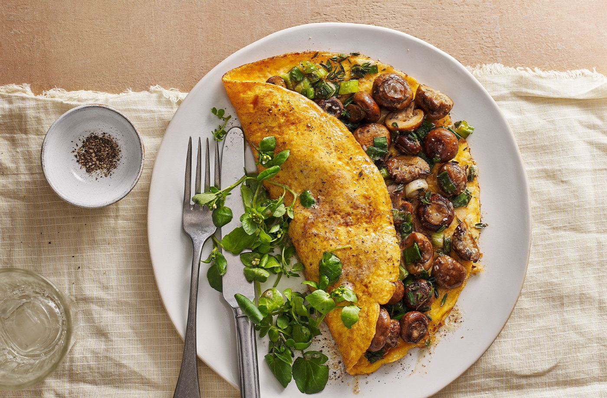

Brown butter mushroom omelette recipe

Ingredients:
- ½ tbsp olive oil
- 150g pack baby chestnut mushrooms, larger ones halved
- 2 spring onions, sliced
- 1 garlic clove, finely chopped
- 2 thyme sprigs, leaves picked
- 10g salted butter
- 3 medium eggs, beaten
- 5g Parmesan or vegetarian hard cheese, grated (optional)
- watercress, to serve (optional)
Steps:
- Heat the oil in a 20cm frying pan over a medium-high heat. Add the mushrooms and cook for 5 mins, then add the spring onions, garlic and thyme. Cook for a further 1 min. Remove from the pan and set aside on a plate.
- Melt the butter in the same pan over a medium heat. Once melted, cook for 1 min until it starts to smell a little nutty and darkens in colour. Pour in the beaten eggs and cook for 2 mins until the bottom is just set. Gently nudge the omelette around in the pan with a wooden spoon if any bubbles have appeared. Top with the mushroom mixture and sprinkle with the cheese, if using. Cook for 2 mins, then fold one side over the other and transfer to a plate. Serve with watercress, if you like.
Source: Tesco Real Food